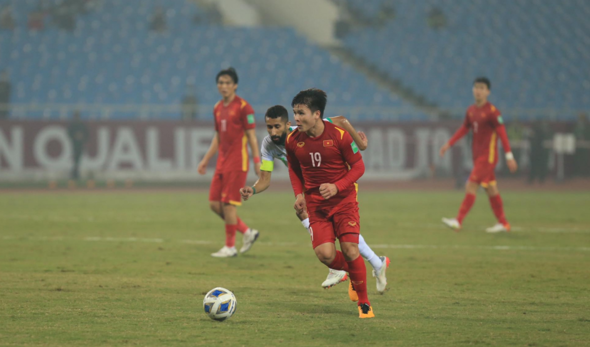
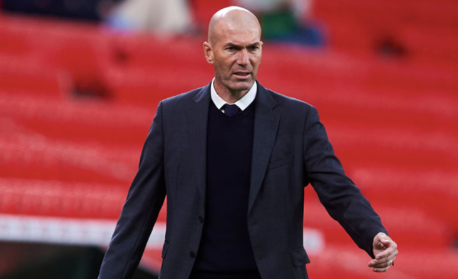
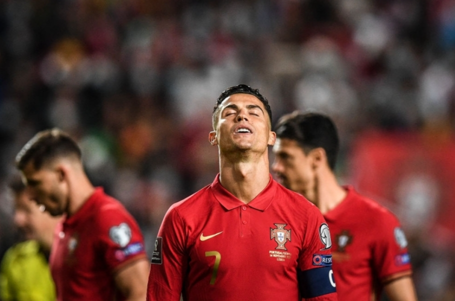

ĐT Việt Nam bước vào trận gặp ĐT Ả Rập Xê Út với một sự quyết tâm cực cao. Mục tiêu của thầy trò HLV Park là có ít nhất 1 điểm trước đội đứng đầu bảng B hiện tại.
Thực tế cho thấy rằng, ĐT Việt Nam đã chơi không đến nỗi nào trong khoảng 20 phút đầu trận. Đã có những cơ hội nguy hiểm được Quang Hải hay Công Phượng tạo ra. Tuy vậy, sự chắc chắn của hàng thủ đội bạn đã khiến các cầu thủ của chúng ta nản lòng.
Trong thời điểm mà tinh thần ĐT Việt Nam đang lên cao sau những giây phút thăng hoa ở đầu trận thì chúng ta lại bất ngờ nhận bàn thua tai hại.
Phút 31, Hồng Duy mắc sai lầm để cầu thủ đối phương cướp bóng trong vòng cấm rồi tạt vào vòng cấm, tạo điều kiện cho Al-Shehri đánh đầu kỹ thuật, Tấn Trường cứu được nhưng trọng tài xác định bóng đã đi qua vạch vôi.
Sau bàn thắng này, ĐT Ả Rập Xê Út cởi bỏ được áp lực, họ chơi tự tin và đầy ĐT Việt Nam vào thế chống đỡ. Đã có lúc, tỉ lệ kiểm soát bóng của đội bóng Tây Á lên tới 80%.
Tuy vậy, trong một ngày mà các hậu vệ của ĐT Việt Nam đã chơi tập trung, Ả Rập Xê Út đã không thể thêm một lần ghi bàn vào lưới thủ môn Tấn Trường.
Chưa thể nói vị trí của HLV Ole Gunnar Solskjaer đã an toàn. Áp lực đè nặng lên vai HLV Solskjaer khi Man Utd đang thất thế liên tiếp thất bại ở Premier League. Họ đã bị loại khỏi League Cup và nếu không có sự xuất sắc của Cristiano Ronaldo, hẳn Man Utd đã hết hy vọng ở Champions League.
Ban đầu, BLĐ Man Utd coi Antonio Conte và Zinedine Zidane là 2 ứng cử viên hàng đầu thay thế Solskjaer. Dù vậy, trong khi Conte đã nhận lời dẫn dắt Tottenham, Zidane được cho là không hứng thú với công việc tại Old Trafford.
Tuy nhiên theo The Times, Man Utd vẫn kiên quyết lôi kéo Zidane. Đáng chú ý, nhà báo Duncan Castles cũng tiết lộ, Zidane đã thay đổi thái độ và hoàn toàn hứng thú với khả năng ngồi vào ghế nóng sân Old Trafford.
Dù vậy, một vấn đề bắt đầu xuất hiện từ chính vợ của chiến lược gia người Pháp. Cụ thể, tờ Daily Star tiết lộ, Veronique Zidane cho rằng Manchester không có điều kiện sống lý tưởng và cô muốn chồng mình nghỉ ngơi lâu hơn trước khi trở lại với bóng đá.
Được biết, thời tiết tại Anh quả thật là một trở ngại lớn. HLV Jurgen Klopp từng khẳng định, ông sẽ không gắn bó lâu dài với Liverpool vì lý do thời tiết.
Vào rạng sáng nay 16/11 (giờ Việt Nam), đội tuyển Italia đã gây thất vọng khi chỉ có được một trận hòa không bàn thắng trước Bắc Ireland. Với kết quả này, nhà đương kim vô địch EURO chính thức để mất tấm vé đến World Cup 2022 vào tay Thụy Sĩ và sẽ phải bước vào loạt trận play-offs.
Như vậy, vòng play-off tranh vé tới World Cup 2022 đã xác định được 10 đội tuyển bao gồm Bồ Đào Nha, Thụy Điển, Ý, Xứ Wales, Cộng hòa Séc, Scotland, Áo, Nga, Ba Lan và Bắc Macedonia. Với những cái tên này, người hâm mộ Cristiano Ronaldo và đội tuyển Bồ Đào Nha đã bắt đầu nghĩ đến một viễn cảnh xấu nhất với đội bóng con cưng.
Theo thể thức của vòng play-offs, sẽ có 12 đội tuyển chia làm 3 nhóm, mỗi nhóm sẽ có 2 trận bán kết và 1 trận chung kết để tìm ra đội giành được tấm vé vớt tới Qatar vào mùa Đông năm sau. Như vậy, tỷ lệ chọi lên tới 1/4.
Italia và Bồ Đào Nha đều nằm ở nhóm hạt giống, có nghĩa là họ sẽ tránh được việc gặp nhau ở bán kết, tuy nhiên khả năng hai đội tuyển này có thể gặp nhau ở bán kết là hoàn toàn có thể xảy ra. Đây chắc chắn là viễn cảnh mà Selecao châu Âu không hề mong muốn, khi Italia đang là một trong những đội tuyển được đánh giá cao nhất thế giới.
Lễ bốc thăm chia nhóm play-offs sẽ diễn ra vào ngày 26/11 tới, tại Zurich, Thụy Sĩ. Các đội tuyển nằm trong nhóm hạt giống như Italia và Bồ Đào Nha sẽ được chơi trận bán kết trên sân nhà.
 KTX ĐH Giao thông vận tải phân hiệu TP.HCM
KTX ĐH Giao thông vận tải phân hiệu TP.HCM 099999999
099999999